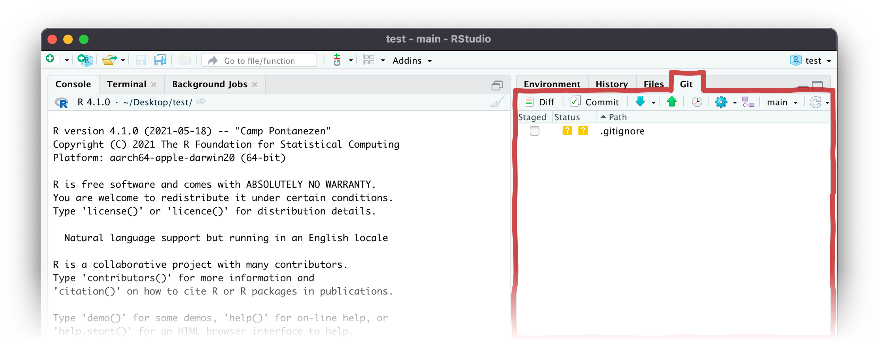
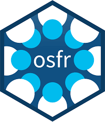
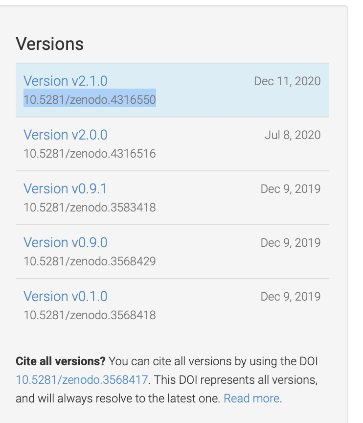

[1] "/Users/dp415/Desktop/exeter_open_reproducibility_website"Making reproducible projects
Why use version control?

Version control allows us to:
- Avoid confusing file names
- Keep track of changes made over time
- Tinker with code without worrying about breaking it
- Easily revert when code does break
- Integrate with other software for online back-ups

- Installed locally
- Free version control system (often pre-installed)
- Manages the evolution of files in a sensible, highly structured way
- Structured around repositories (aka a ‘repo’) as units of organisation
- Cloud-based
- Hosting service for git-based projects (others: BitBucket, GitLab)
- Similar to DropBox/Google Docs but better
- Allows others to see, synchronise with and contribute to your work
Interacting with git/GitHub



Example: Open Science framework
- Easy to download/upload
via theosfrpackage - Here to stay for the open
science revolution - Allows you to assign DOIs
to projects and/or datasets


Example: Zenodo
- 50GB file size limit
- You can just zip up your local version
of your Github repository (with both
code and data) at the end of running
all your code/analysis, and upload it - Allows you to assign a DOI to the
repository as a whole, as well as
to different versions of that repository
as it evolves through time
(and peer review)


Storing data outside of GitHub, but in a repositories friendly to GitHub keeps everyone happy!